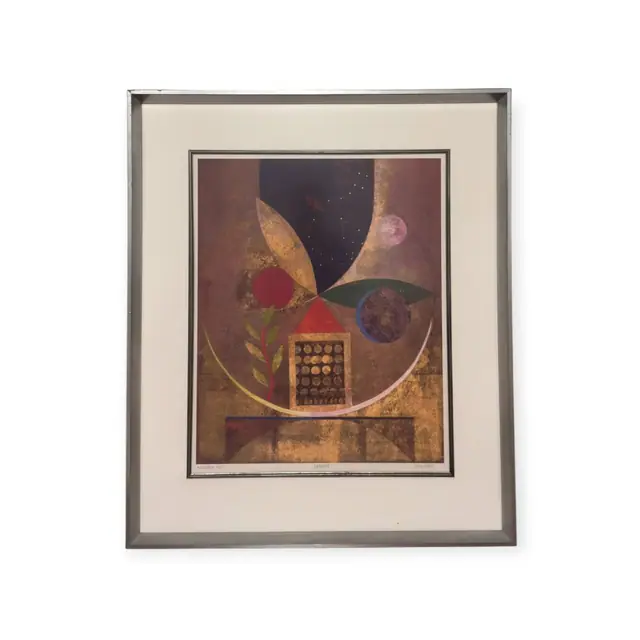
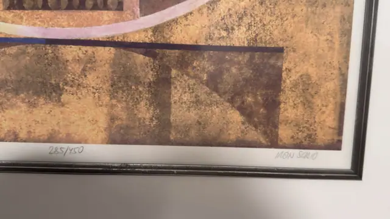
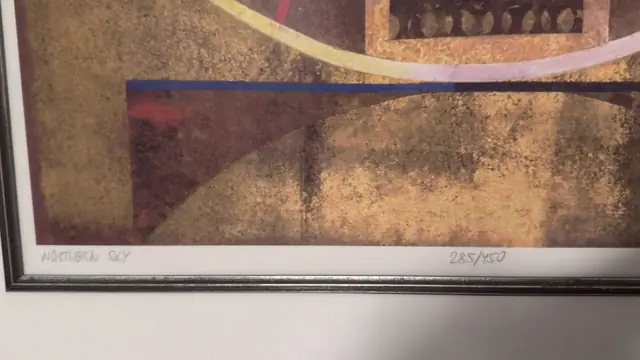
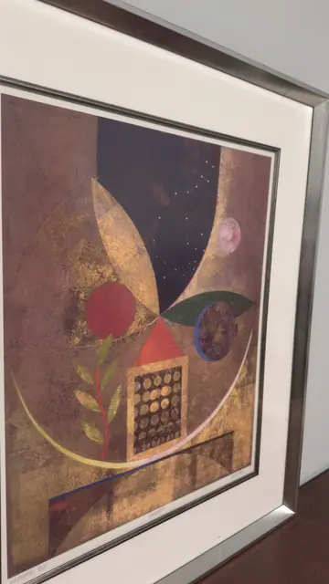
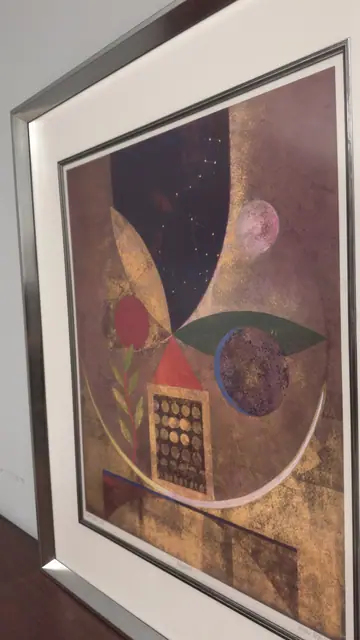

Paintings & Prints
Northern Sky, Signed Limited Edition Print, MON SCHIO, Numbered Edition, Framed
MON SCHIO · 1980s-1990s
Price Upon Request





About the Item
MON SCHIO. A mottled gold and bronze ground, textured like weathered gilt plaster, is cut by a deep indigo wedge sprinkled with tiny stars in the upper left and by a great sweeping golden arc that curves across the lower half. A pale pink disc floats top right, a crimson circle and a dark green leaf sit at centre, and a small chequered tower with a red roof anchors the composition below. The palette is warm and metallic - antique gold, bronze, plum, indigo - with a single blue horizontal rule for contrast. Pencil signed, titled and numbered in the bottom margin. Medium: serigraph or lithograph on paper. Signed lower right margin, in pencil, reading "MON SCHIO". Edition: 285/450. Inscribed on the reverse or mount: 285/450; MON SCHIO; NORTHERN SKY. Condition: Sheet is clean with bright metallic passages and no foxing visible. Some reflection on the glass; the silver frame shows minor handling marks.
Details
- Creator:
- MON SCHIO
- Creation Year:
- 1980s-1990s
- Dimensions:
- Height: 38.25 in (97.16 cm)
Width: 32.0 in (81.28 cm)
outside of frame - Medium:
- serigraph or lithograph on paper
- Edition:
- 285/450
- Period:
- 20Th
- Condition:
- Offered in the condition shown in the photographs.
- Reference Number:
- VO-166
- Documentation:
- no certificate photographed; pencil-signed, titled and numbered in the margin
- Gallery Location:
- 285/450; MON SCHIO; NORTHERN SKY